Introduction
Your personal portfolio website is based on the following four web pages:
- Home page (in main folder)
- Privacy page (also in main folder)
- Portfolio page (in 📁 portfolio sub-folder)
- Contact page (in 📁 contact sub-folder)

Your four pages will have the following web addresses.
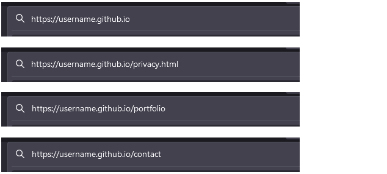For your inspiration, here are some sample portfolio websites from web designers and developers.
Some sample developer portfolio websites
For your inspiration, here are some sample portfolio websites from web designers and developers.
And here are some sample portfolio websites from students.
1: Rename your old index.html web page
In your 'main' 📁 websites folder, you already have a file named index.html. Before continuing, rename this file to exercises.html.

2: Download images
Your next step is to download the following seven images to your 📁 websites/assets/img sub-folder.


3: Download your custom.css stylesheet file
Do you want a light-coloured (or mostly light-coloured) website?
Or a dark-coloured (or mostly dark-coloured) website?

Download one of these two files to the 📁 assets/css sub-folder of your 'main' websites folder.
- custom.css (light theme)
- custom.css (dark theme)
If this file downloads to your 📁 Downloads folder, delete it from there after you copy it to your 📁 websites/assets/css folder.
4: Download your Home page
Download one of these two files to your 'main' websites folder.
- index.html (light theme)
- index.html (dark theme)

If this index.html file downloads to your 📁 Downloads folder, delete it from there after you copy it to your 📁 websites folder.
Your 📁 Downloads folder can contain only one file named index.html at one time.
If you try to download a second file named index.html to your 📁 Downloads folder, Windows will automatically rename this second file to index-1.html or index-2.html and so on.
Open the following two files in VS Code.
- The index.html file in your 'main' websites folder.
- The custom.css file in your 'main' assets/css sub-folder.
 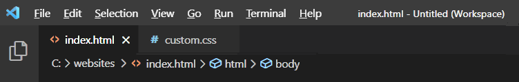
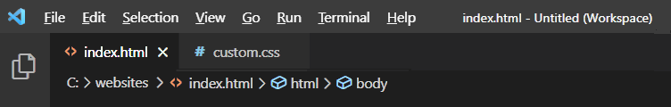
5: Update your Home page
In your Home page are <nav>, a <header>, one <section> and a <footer> content containers.
Inside the <section> are three <div class="col-3"> tags, each one displaying details of a single project.
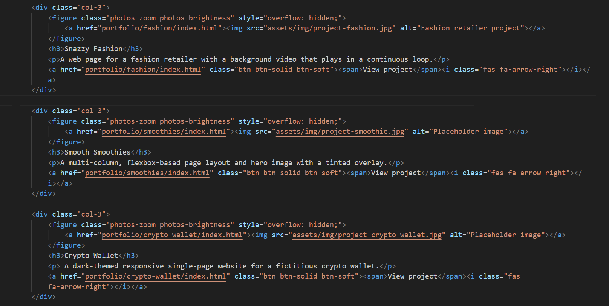Replace the second of these three with the following.
<div class="col-3">
<figure class="photos-zoom photos-brightness" style="overflow: hidden;">
<a href="store/index.html"><img src="assets/img/project-store.png" alt="Store project"></a>
</figure>
<h3>Book Store</h3>
<p>An online book store with affiliate links to Amazon.</p>
<a href="store/index.html" class="btn btn-solid btn-soft"><span>View project</span><i class="fas fa-arrow-right"></i></a>
</div>On your Home page, your three projects should now look as follows. (The text and background colours may be different.)
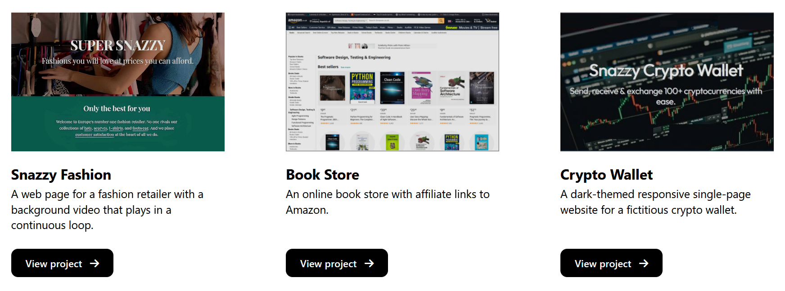6: Download your Portfolio page
You should already have a 📁 portfolio folder in your 'main' websites folder.
Download one of these two files to your 📁 portfolio folder.
- index.html (light theme)
- index.html (dark theme)
If this index.html file downloads to your 📁 Downloads folder, delete it from there after you copy it to your 📁 websites/portfolio sub-folder.
Your six projects should look as shown below. (The text and background colours may be different.)
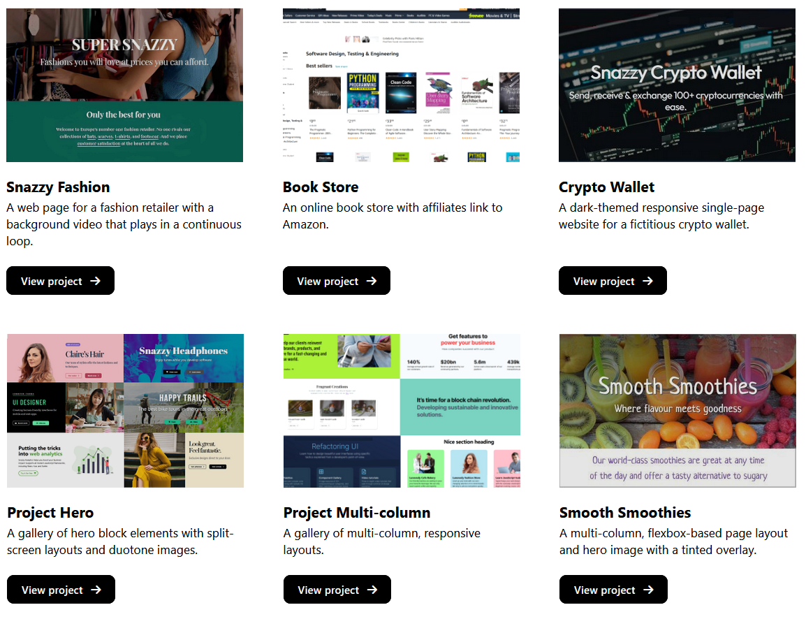7: Download your Contact page
Create a new folder in your 'main' websites folder named contact.
Download one of these two files to your new 📁 contact folder.
- index.html (light theme)
- index.html (dark theme)
If this index.html file downloads to your 📁 Downloads folder, delete it from there after you copy it to your 📁 websites/contact sub-folder.
If this file downloads to your 📁 Downloads folder, delete it from there after you copy it to your 📁 websites/contact folder.
As part of the downloading process, your web browser may have changed the web address in the Privacy hyperlink near the bottom of the Contact web page. See below.
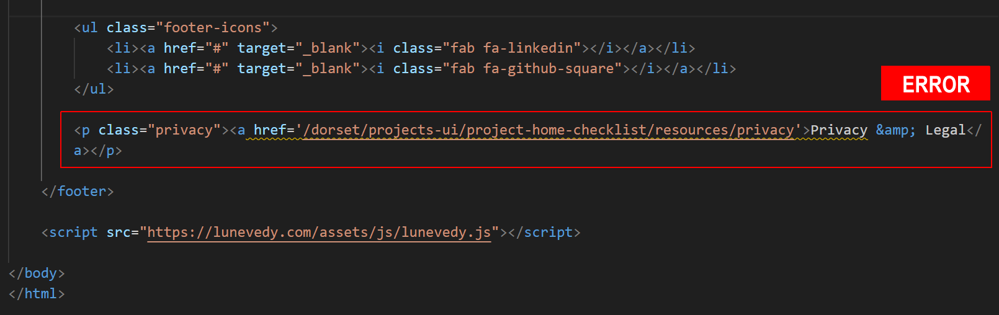If this has happened, update the Privacy hyperlink as shown below.
<p class="privacy"><a href="../privacy.html">Privacy & Legal</a></p>
8: Download your Privacy web page
Download the file below to your 'main' website folder.
If this file downloads to your 📁 Downloads folder, delete it from there after you copy it to your 📁 websites folder.
You do not need to update any details on this web page.
9: Verify your hyperlinks
Check your new folder structure and files look as shown below.
Click on the hyperlinks on each page - in the navbar, the main text, and in the footer - to verify that all work correctly.
10: Add the Google Analytics and Inspectet code
In the <head> of your Home, Portfolio and Contact web pages, ensure you have added a link to your Google Analytics and Inspectlet accounts. They should look as shown below.
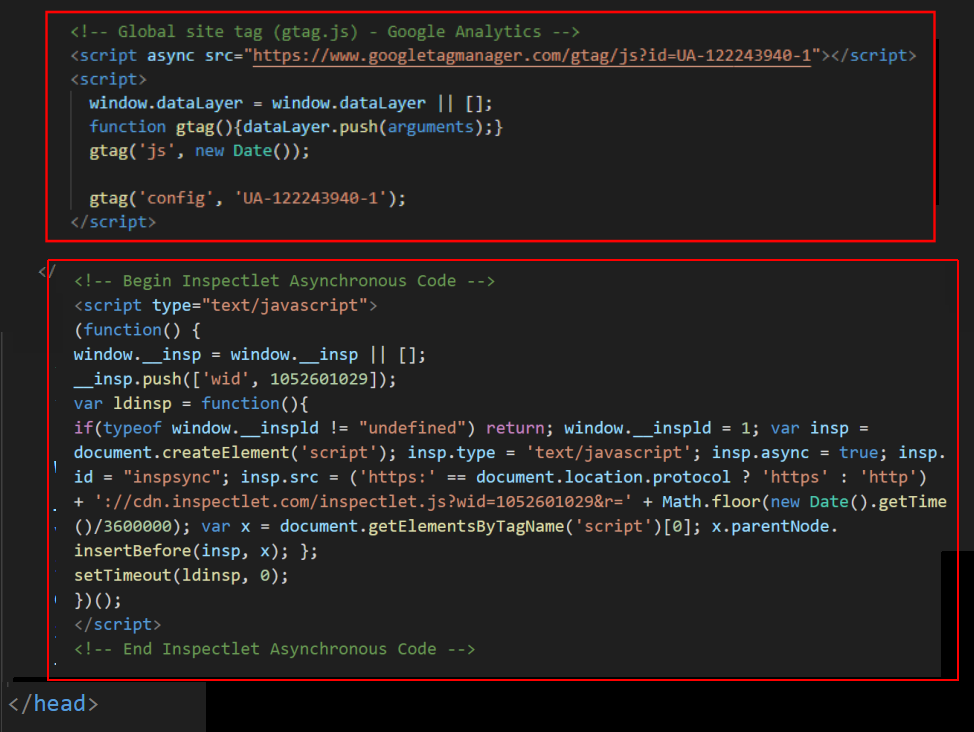11: Personalise your meta tags
Each of your three sample web pages contains template text for the page's title and description tags. These two tags are examples of so-called meta-tags.
Your first task in personalising the sample web pages is to update the content of the meta tags with text of your own choice. Follow the steps below.
- In VS Code, open your web pages.
index.html
📁 contact/index.html
📁 portfolio/index.html - In the <head> of each web page, in the title and description tags, replace the sample text with your own details.
Here are a few examples.
Home page:

Portfolio page:
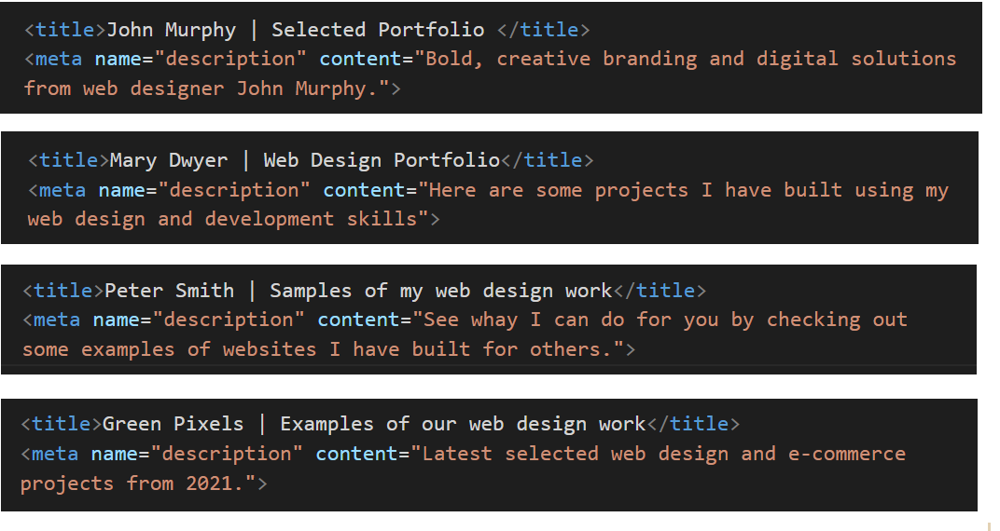Contact page:

See the helpful links below for guidance on using the title and description meta tags on your web pages.
Meta tags: Further resources
What is a title tag?. From moz.com.
What is a meta description? From moz.com
Meta Tags for SEO: Definition, Examples, & Best Practices. From Neil Patel
Content Optimization Strategies: Meta Descriptions. From Brian Dean
DO NOT use the same meta tags on different web pages of the same website.
This 'confuses' Google and other search engines.
"When two, or more, of your pages contain similar title tags, it falls upon the search engine to try to determine which page the user really wants to see in their results. What happens is that some of your pages will get preferred ranking status, while others get ignored completely. " Source.
13: Create and add your cookie privacy message
Create a ‘pop-up’ cookie consent message and add it to your Home, Portfolio and Contact pages.
This is required under EU law for any web page that uses Google Analytics.
14: Update the endpoint of your contact form
You need update your contact/index.html web page with the endpoint code you received from the Formspree website.
- In VS Code, display the contact/index.html web page.
- Update the form's action value by copying-and-pasting the endpoint value from Formspree. See the example shown below.

- Save your contact/index.html file.
You can check your form is working by entering some details and clicking the Send button.
15: Download your error-404.html web page
A 404.html web page is the standard file for displaying a “Page Not Found” message. It shows up when a visitor tries to visit a page on your website that doesn’t exist — maybe because:
- They typed the URL wrong,
- You deleted or moved a file
- A link was broken.
When you upload a 404.html file to GitHub, GitHub will automatically display this web page when necessary. No further configuration is required.
Download one of these two files to your 'main' websites folder.
- index.html (light theme)
- index.html (dark theme)
✅ Instead of showing a confusing browser error, your site shows a friendly, helpful page.
16: Upload your files to GitHub
From your 'main' folder on your computer, upload the following files and folders to your account on GitHub.
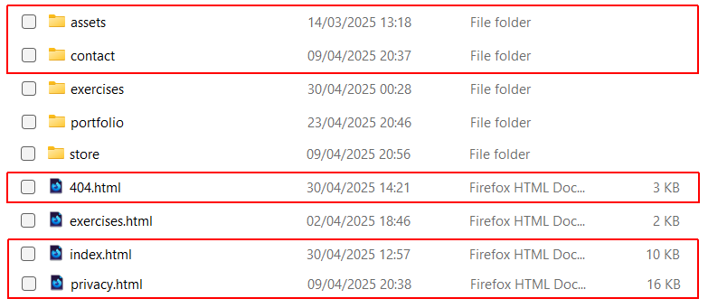From your 📁 portfolio folder on your computer, upload the index.html file to your portfolio folder on GitHub.
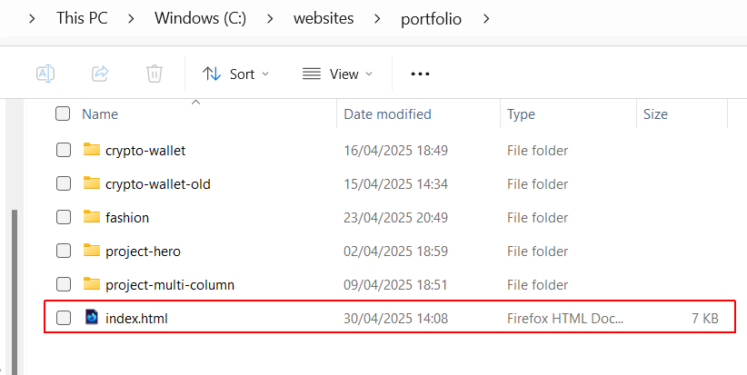17: Check for broken links
After you have uploaded your web pages to GitHub, run the Dead Link Checker on your https://username.github.io website.

You can ignore the following two apparent errors. This is a fault with the online link checker.
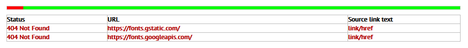Correct any broken hyperlinks and reupload the relevant web pages.
18: Create and submit a sitemap
A sitemap.xml is a special file that lists all the pages on your website, written in a format that search engines like Google can read and understand.
Think of it like a map for robots, not for people.
- It helps search engines find and index all your pages correctly.
- It's especially useful if your site has many pages, subfolders, or new pages that aren’t linked clearly yet.
Use the website below to create a sitemap:
After you download your sitemap.xml file, you can edit it as appropriate. For example, you may not want to include the files in your 📁 exercises folder in the sitemap file.
When finished, upload the sitemap.xml file to your top-level folder on GitHub.
Sign in to your account on Google Search Console and submit your sitemap.
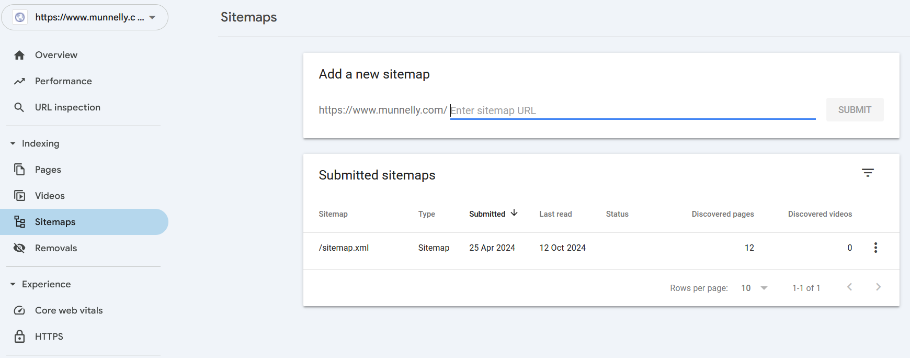See the next Tutorial to continue building your personal portfolio website.